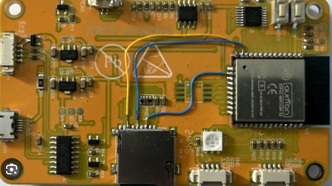
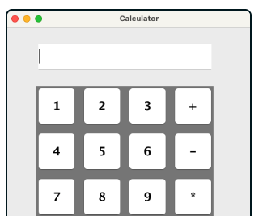
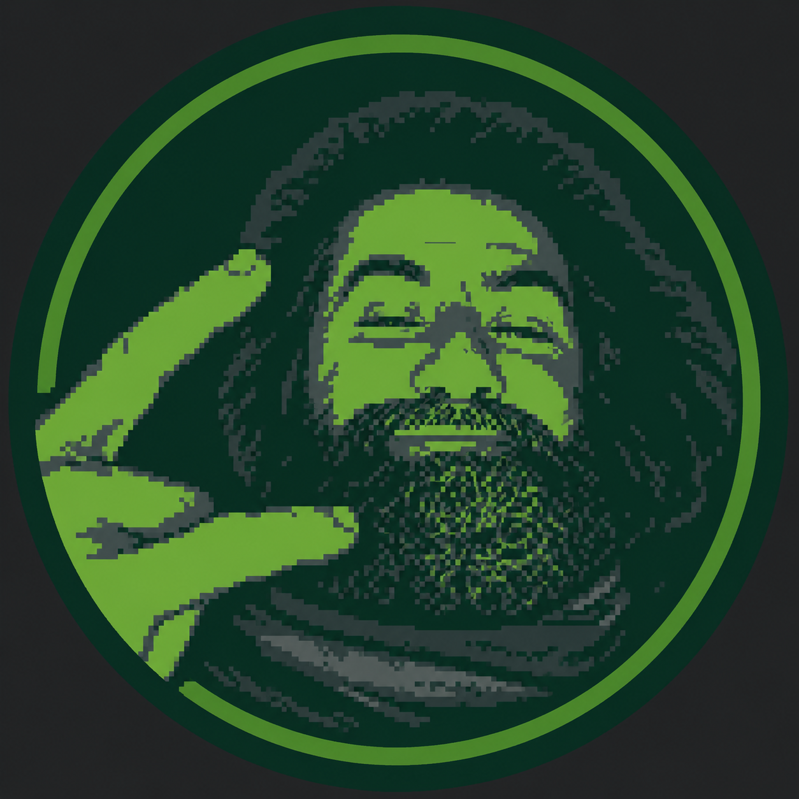
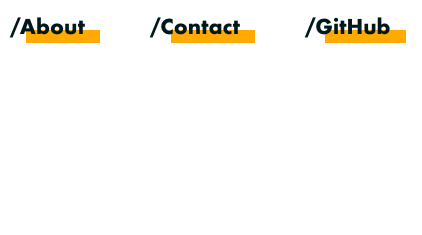
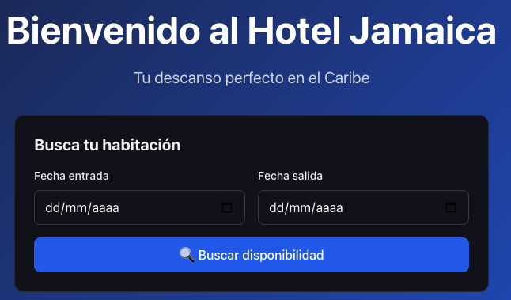

Sobre mí
Me apasiona la programación así como resolver problemas y comprender como funcionan las cosas. Actualmente soy estudiante de DAW y planeo continuar con los estudios de ingeniería informática que ya tengo iniciados. IoT, programación en C, sistemas embebidos, servidores me encanta cacharrear, investigar así como la ciencia y la tecnología, también la filosofía.
En este pedacito virtual, tansolo pretendo mostrarte de alguna manera algunas de las cosas que hago, algunos de mis proyectos y colaboraciones... algunas de las cosas que me apasionan.
Gracias por pasarte por aquí !!
"larga vida y prosperidad!"
Proyectos

Invernadero Automatizado - Work in progress
Controlador IoT para invernadero construido sobre un ESP32. Monitoriza temperatura, humedad y riego. Gestionando automáticamente y con telemetría de datos a través de MQTT. Para este proyecto ambiciono implementar una abstracción HAL del circuito, de manera que también emplea un gemelo digital para pruebas y test unitarios, así como un control de versiones y actualización de firmware sobre la marcha OTA.

Calculadora en Java
Aplicación de calculadora desarrollada en Java. Proyecto de práctica siguiendo tutorial para explorar aplicativamente la orientación a objetos.

Portfolio good old Html/CSS
Portfolio self-hosted en HTML y CSS. A pesar de que también encuentro práctico el uso de frameworks como React, gracias al apoyo de Claude y para ahorrar el uso de recursos en el servidor, he optado por realizar este portfolio con las mínimas dependencias posíbles.

Portfolio antiguo usando React
Portfolio antiguo realizado con React. Este es my primer portfolio desplegado en Vercel conectado con repositório ne GitHub.

Hotel Jamaica, tu descanso perfecto
Motor de búsqueda en Go, reserva y gestión para un establecimiento hotelero. Este proyecto gestiona varias habitaciones y posee un panel de gestión privada accesible a través de la web para la gestión hotelera. Maneja una base de datos alojada en servidor própio montada con PostgresSQL. Inspirado por aplicar lo aprendido durante el FP y con el afán de poner en práctica lo aprendido así como para expandir capacidades utilizando la IA como profesor.